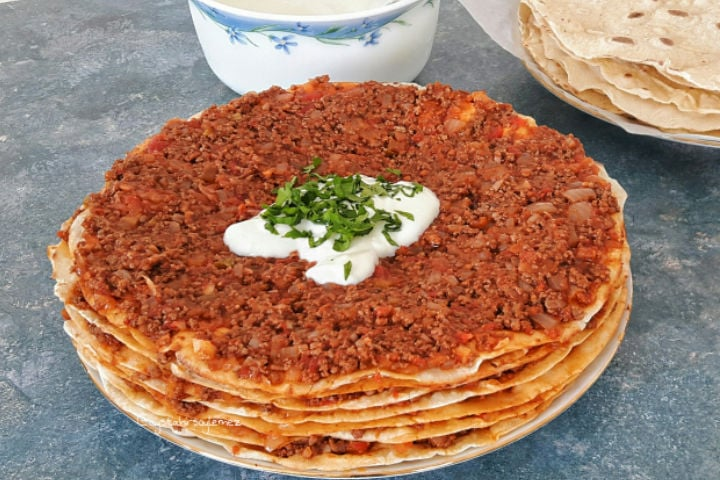

Kayseri yaglama

4-6 Kişilik Kayseri Yağlaması Tarifi İçin Malzemeler
- 1 su bardağı ılık su (200 ml)
- 1 su bardağı ılık süt (200 ml)
- 1 paket instant maya
- 1 tatlı kaşığı tuz
- 1 tatlı kaşığı şeker
- 2 yemek kaşığı sıvı yağ
- 5 su bardağı un
İç harcı için;
- 500 gr. kıyma
- 2 adet soğan
- 2 adet yeşil biber
- 2 adet kırmızı biber
- 2 adet domates
- 2 diş sarımsak
- 1 yemek kaşığı salça
- 1 yemek kaşığı tereyağı
- 1 çay bardağı zeytinyağı
- 1 çay bardağı su
- 1 tatlı kaşığı tuz
- 1 tatlı pul biber
- 1 çay kaşığı karabiber
- 1 çay kaşığı kimyon
Kayseri Yağlaması Tarifi Nasıl Yapılır?
- Şebit olarak da bilinen Kayseri yağlamasının hamuru için öncelikle yoğurma kabına un, maya, tuz ve şekeri alarak karıştıralım.
- Üzerine süt, su ve sıvı yağı ekleyerek yumuşak kıvamlı bir hamur elde edinceye kadar yoğuralım.
- Kıvam alan hamurumuzun üzerini streçleyip temiz bir bezle örterek 40 dakika kadar mayalanmaya bırakalım.
- Kıymalı harç için yapışmayan tavaya kıymayı alalım ve kavuralım. Bu aşamada kıymayı ezerek karıştıralım.
- Kıymanın rengi dönüp suyunu çektikten sonra üzerine zeytinyağı ve tereyağını ekleyerek tereyağı eriyinceye kadar kavuralım.
- Doğranmış soğan, sarımsak, kırmızı ve yeşil biberi de malzemelerimizin üzerine ekleyelim, kavuralım.
- Daha sonra salça, karabiber, kimyon, pul biber ve tuzu ekleyerek karıştıralım.
- Kabuklarını soyarak doğradığımız domatesi de tavaya alalım, karıştırmaya devam edelim.
- Son olarak sıcak suyu ilave edip, kıyma suyunu çekinceye kadar 8-10 dakika kısık ateşte pişirelim.
- Mayalanan hamuru tezgaha alalım. Kenarlardan içe doğru toplayarak hamurun havasını alalım.
- Toparladığımız hamuru 12 eşit parçaya bölelim ve her bir parçayı beze haline getirelim.
- Bezelerimizin tamamını hazırladıktan sonra üzerlerinin beklerken kurumamaları için streç filmle örtelim
- Ardından un serptiğimiz tezgahta bezeleri sırasıyla yaklaşık bir servis tabağı boyutuna gelinceye kadar açalım.
- Hamuru açtıktan sonra fazla ununun dökülmesi için hafifçe sallayalım.
- Ardından ısıttığımız yapışmaz tavaya hamuru yerleştirelim, orta ateşte sık sık çevirerek pişirmeye başlayalım.
- Hazırladığımız lavaşı geniş bir tabağa alalım üzerine iç harcımızdan bir kaşık yardımıyla yerleştirerek her yerine gelecek şekilde yayalım.
- Lavaşlarımızı bu şekilde aralarına kıymalı harç koyarak üst üste yerleştirelim. Kıymalı harcın tamamı bitinceye kadar bu şekilde lavaşlarımızı kat kat yerleştirmeye devam edelim.
- Son olarak yağlılarımızın üzerine sarımsaklı veya sarımsaksız yoğurdu çırparak gezdirelim ve dilimleyerek servis edelim.
Buraya tıklayarak yapılış videosunu izleyebilirsiniz...